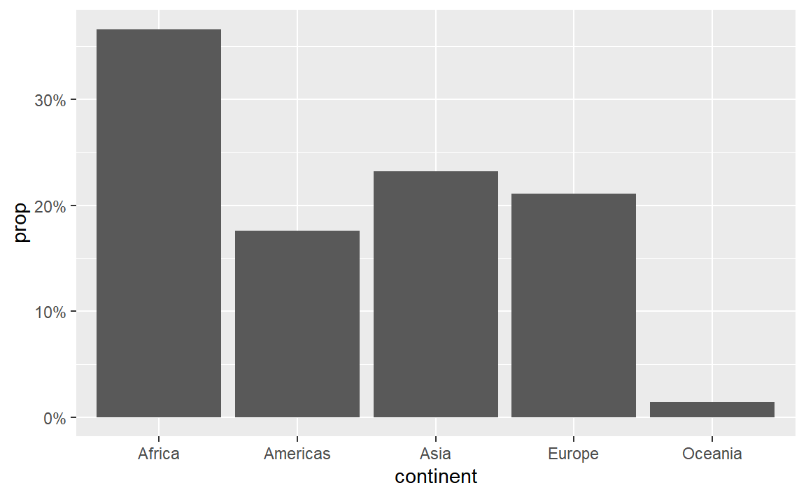

ggplot(data = mpg, mapping = aes(x = displ, y = hwy)) +
geom_point()Week 4 FAQs
FAQs
Hi everyone!
Great work this week with the essential construction data from exercise 4! It was a big dataset and you were able to show some interesting patterns with neat plots!
Just a few FAQs this week—enjoy!
How can I make my R code more readable?
(This was a tip from last week, but it’s a good reminder.)
Unlike other programming langauges, R is pretty forgiving about code style. You can have lines of code that are indented however you want, that are as long as you want, and that have line breaks generally wherever you want.
There are some basic grammar-like guidelines you can follow to make your code more readable, more consistent, and easier for people to follow. I’ve compiled a mini style guide here—you should check it out and try implementing the suggestsions.
My axis labels are overlapping and ugly. How can I fix that?
(This was a question from last week too, but lots of you asked about it again)
Sometimes you’ll have text that is too long to fit comfortably as axis labels and the labels will overlap and be gross:

Check out this blog post for a bunch of different ways to fix this and make nicer labels, like this:

Why did we need to group a second time when calculating the proportions for the heatmap?
At the end of exercise 4, you created a heatmap showing the proportions of different types of construction projects across different boroughs. In the instructions, I said you’d need to use group_by() twice to get predictable proportions. Some of you have wondered what this means. Here’s a quick illustration.
When you group by a column, R splits your data into separate datasets behind the scenes, and when you use summarize(), it calculates summary statistics (averages, counts, medians, etc.) for each of those groups. So when you used group_by(BOROUGH, CATEGORY), R made smaller datasets of Bronx Affordable Housing, Bronx Approved Work, Brooklyn Affordable Housing, Brooklyn Approved Work, and so on. Then when you used summarize(total = n()), you calculated the number of rows in each of those groups, thus giving you the number of projects per borough per category. That’s basic group_by() %>% summarize() stuff.
Once you have a count of projects per borough, you have to decide how you want to calculate proportions. In particular, you need to figure out what your denominator is. Do you want the proportion of all projects within each borough (e.g. X% of projects in the Bronx are affordable housing, Y% in the Bronx are approved work, and so on until 100% of the projects in the Bronx are accounted for), so that each borough constitutes 100%? Do you want the proportion of boroughs for each project (e.g. X% of affordable housing projects are in the Bronx, Y% of affordable housing projects are in Brooklyn, and so on until 100% of the affordable housing projects are accounted for). This is where the second group_by() matters.
For example, if you group by borough and then use mutate to calculate the proportion, the proportion in each borough will add up to 100%. Notice the denominator column here—it’s unique to each borough (1169 for the Bronx, 2231 for Brooklyn, etc.).
essential %>%
group_by(BOROUGH, CATEGORY) %>%
summarize(totalprojects = n()) %>%
group_by(BOROUGH) %>%
mutate(denominator = sum(totalprojects),
proportion = totalprojects / denominator)
#> # A tibble: 33 × 5
#> # Groups: BOROUGH [5]
#> BOROUGH CATEGORY totalprojects denominator proportion
#> <fct> <fct> <int> <int> <dbl>
#> 1 Bronx Affordable Housing 80 1169 0.0684
#> 2 Bronx Approved Work 518 1169 0.443
#> 3 Bronx Homeless Shelter 1 1169 0.000855
#> 4 Bronx Hospital / Health Care 55 1169 0.0470
#> 5 Bronx Public Housing 276 1169 0.236
#> 6 Bronx Schools 229 1169 0.196
#> 7 Bronx Utility 10 1169 0.00855
#> 8 Brooklyn Affordable Housing 168 2231 0.0753
#> 9 Brooklyn Approved Work 1223 2231 0.548
#> 10 Brooklyn Hospital / Health Care 66 2231 0.0296
#> # … with 23 more rowsIf you group by category instead, the proportion within each category will add to 100%. Notice how the denominator for affordable housing is 372, approved work is 4189, and so on.
essential %>%
group_by(BOROUGH, CATEGORY) %>%
summarize(totalprojects = n()) %>%
group_by(CATEGORY) %>%
mutate(denominator = sum(totalprojects),
proportion = totalprojects / denominator)
#> # A tibble: 33 × 5
#> # Groups: CATEGORY [7]
#> BOROUGH CATEGORY totalprojects denominator proportion
#> <fct> <fct> <int> <int> <dbl>
#> 1 Bronx Affordable Housing 80 372 0.215
#> 2 Bronx Approved Work 518 4189 0.124
#> 3 Bronx Homeless Shelter 1 5 0.2
#> 4 Bronx Hospital / Health Care 55 259 0.212
#> 5 Bronx Public Housing 276 1014 0.272
#> 6 Bronx Schools 229 1280 0.179
#> 7 Bronx Utility 10 90 0.111
#> 8 Brooklyn Affordable Housing 168 372 0.452
#> 9 Brooklyn Approved Work 1223 4189 0.292
#> 10 Brooklyn Hospital / Health Care 66 259 0.255
#> # … with 23 more rowsYou can also ungroup completely before calculating the proportion. This makes it so the entire proportion column adds to 100%:
essential %>%
group_by(BOROUGH, CATEGORY) %>%
summarize(totalprojects = n()) %>%
ungroup() %>%
mutate(denominator = sum(totalprojects),
proportion = totalprojects / denominator)
#> # A tibble: 33 × 5
#> BOROUGH CATEGORY totalprojects denominator proportion
#> <fct> <fct> <int> <int> <dbl>
#> 1 Bronx Affordable Housing 80 7209 0.0111
#> 2 Bronx Approved Work 518 7209 0.0719
#> 3 Bronx Homeless Shelter 1 7209 0.000139
#> 4 Bronx Hospital / Health Care 55 7209 0.00763
#> 5 Bronx Public Housing 276 7209 0.0383
#> 6 Bronx Schools 229 7209 0.0318
#> 7 Bronx Utility 10 7209 0.00139
#> 8 Brooklyn Affordable Housing 168 7209 0.0233
#> 9 Brooklyn Approved Work 1223 7209 0.170
#> 10 Brooklyn Hospital / Health Care 66 7209 0.00916
#> # … with 23 more rowsWhich one you do is up to you—it depends on the story you’re trying to tell.
Why isn’t the example code using data = whatever and mapping = aes() in ggplot() anymore? Do we not have to use argument names?
In the first few sessions, you wrote code that looked like this:
In R, you feed functions arguments like data and mapping and I was having you explicitly name the arguments, like data = mpg and mapping = aes(...).
In general it’s a good idea to use named arguments, since it’s clearer what you mean.
However, with really common functions like ggplot(), you can actually skip the names. If you look at the documentation for ggplot() (i.e. run ?ggplot in your R console or search for “ggplot” in the Help panel in RStudio), you’ll see that the first expected argument is data and the second is mapping.

If you don’t name the arguments, like this…
ggplot(mpg, aes(x = displ, y = hwy)) +
geom_point()…ggplot() will assume that the first argument (mpg) really means data = mpg and that the second really means mapping = aes(...).
If you don’t name the arguments, the order matters. This won’t work because ggplot will think that the aes(...) stuff is really data = aes(...):
ggplot(aes(x = displ, y = hwy), mpg) +
geom_point()If you do name the arguments, the order doesn’t matter. This will work because it’s clear that data = mpg (even though this feels backwards and wrong):
ggplot(mapping = aes(x = displ, y = hwy), data = mpg) +
geom_point()This works with all R functions. You can either name the arguments and put them in whatever order you want, or you can not name them and use them in the order that’s listed in the documentation.
In general, you should name your arguments for the sake of clarity. For instance, with aes(), the first argument is x and the second is y, so you can technically do this:
ggplot(mpg, aes(displ, hwy)) +
geom_point()That’s nice and short, but you have to remember that displ is on the x-axis and hwy is on the y-axis. And it gets extra confusing once you start mapping other columns:
ggplot(mpg, aes(displ, hwy, color = drv, size = hwy)) +
geom_point()All the other aesthetics like color and size are named, but x and y aren’t, which just feels… off.
So use argument names except for super common things like ggplot() and the {dplyr} verbs like mutate(), group_by(), filter(), etc.
I have numbers like 20000 and want them formatted with commas like 20,000. Can I do that automatically?
Yes you can! There’s an incredible package called {scales}. It lets you format numbers and axes and all sorts of things in magical ways. If you look at the documentation, you’ll see a ton of label_SOMETHING() functions, like label_comma(), label_dollar(), and label_percent().
You can use these different labeling functions inside scale_AESTHETIC_WHATEVER() layers in ggplot.
label_comma() adds commas:
library(scales)
## Warning: package 'scales' was built under R version 4.2.3
library(gapminder)
## Warning: package 'gapminder' was built under R version 4.2.3
gapminder_2007 <- gapminder %>%
filter(year == 2007)
ggplot(gapminder_2007, aes(x = gdpPercap)) +
geom_histogram(binwidth = 1000) +
scale_x_continuous(labels = label_comma())
label_dollar() adds commas and includes a “$” prefix:
ggplot(gapminder_2007, aes(x = gdpPercap)) +
geom_histogram(binwidth = 1000) +
scale_x_continuous(labels = label_dollar())
label_percent() multiplies values by 100 and formats them as percents:
gapminder_percents <- gapminder_2007 %>%
group_by(continent) %>%
summarize(n = n()) %>%
mutate(prop = n / sum(n))
ggplot(gapminder_percents, aes(x = continent, y = prop)) +
geom_col() +
scale_y_continuous(labels = label_percent())
You can also change a ton of the settings for these different labeling functions. Want to format something as Euros and use periods as the number separators instead of commas, like Europeans? Change the appropriate arguments! You can check the documentation for each of the label_WHATEVER() functions to see what you can adjust (like label_dollar() here)
ggplot(gapminder_2007, aes(x = gdpPercap)) +
geom_histogram(binwidth = 1000) +
scale_x_continuous(labels = label_dollar(prefix = "€", big.mark = "."))
All the label_WHATEVER() functions actually create copies of themselves, so if you’re using lots of custom settings, you can create your own label function, like label_euro() here:
# Make a custom labeling function
label_euro <- label_dollar(prefix = "€", big.mark = ".")
# Use it on the x-axis
ggplot(gapminder_2007, aes(x = gdpPercap)) +
geom_histogram(binwidth = 1000) +
scale_x_continuous(labels = label_euro)
These labeling functions also work with other aesthetics, like fill and color and size. Use them in scale_AESTHETIC_WHATEVER():
ggplot(
gapminder_2007,
aes(x = gdpPercap, y = lifeExp, size = pop, color = pop)
) +
geom_point() +
scale_x_continuous(labels = label_dollar()) +
scale_size_continuous(labels = label_comma()) +
scale_color_viridis_c(labels = label_comma())
There are also some really neat and fancy things you can do with scales, like formatting logged values, abbreviating long numbers, and many other things. Check out this post for an example of working with logged values.
ggplot(
gapminder_2007,
aes(x = gdpPercap, y = lifeExp, size = pop, color = continent)
) +
geom_point() +
scale_x_log10(breaks = 500 * 2^seq(0, 9, by = 1),
labels = label_dollar(scale = cut_short_scale())) +
scale_size_continuous(labels = label_comma(scale_cut = cut_short_scale()))